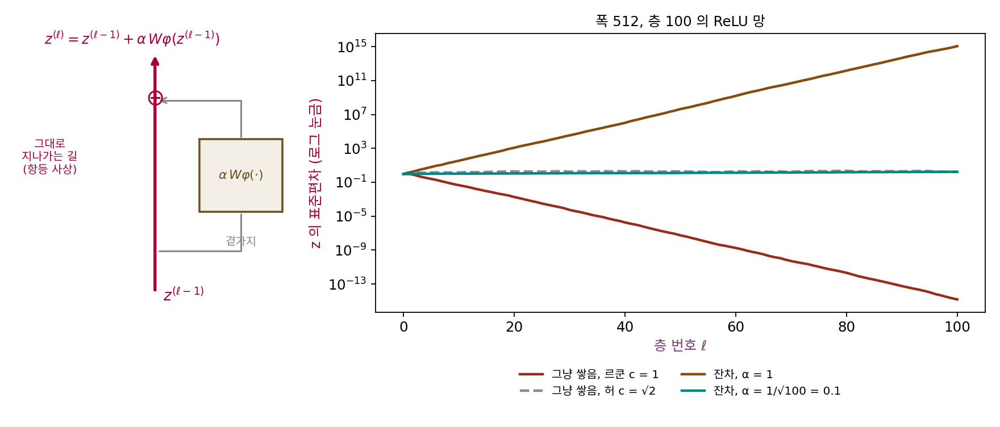

잔차 연결: 그대로 지나가는 길 위에 고침을 더하기
허 초기화와 직교 초기화로 층을 수십 개 쌓을 수 있게 되었다. 그러나 허카이밍과 동료들이 적었듯, 30층 망은 학습이 되긴 해도 14층 망보다 정확도가 나빴다. 초기화는 출발점의 크기만 맞출 뿐, 학습이 진행되면 가중치가 바뀌어 층마다의 배율도 1에서 벗어난다. 층이 백 개면 층마다 배율이 1에서 조금 벗어난 차이가 백 번 곱해진다. 층마다의 배율을 1에 붙들어 매지 않고도 깊게 쌓을 수 있는 구조는 없을까?
역사: 더 깊은 망이 학습 오차까지 더 컸다
2015년 12월, 허카이밍, 장샹위, 런샤오칭, 쑨젠은 논문 「이미지 인식을 위한 깊은 잔차 학습」을 공개했다(이듬해 컴퓨터 비전과 패턴 인식 학회 CVPR 에서 발표). 그들이 먼저 보인 것은 이상한 실험 결과였다. CIFAR-10(작은 컬러 사진 6만 장을 열 가지 범주로 나눈 데이터셋) 분류에서 층을 그냥 쌓은 56층 망이 20층 망보다 시험 오차뿐 아니라 학습 오차까지 높았다. 오버피팅이라면 학습 오차는 오히려 낮아야 한다. 그들은 이것을 「성능 저하(degradation) 문제」라 불렀다.
그들은 이 일이 그래디언트 소실 때문은 아닐 것이라고 적었다. 그 망들은 허 초기화로 시작했고, 층마다 출력을 다시 평균 0, 분산 1로 맞추는 배치 정규화도 썼다. 앞으로 가는 신호도, 거꾸로 가는 그래디언트도 사라지지 않는 것을 확인했다고 했다. 그런데도 깊은 망이 얕은 망만큼도 학습 오차를 줄이지 못했다. 생각해 보면 이상한 일이다. 56층 망은 20층 망의 층들을 그대로 쓰고 남은 36층을 아무것도 하지 않는 항등 사상(입력을 그대로 내보내는 함수)으로 두기만 해도 20층 망과 같은 학습 오차를 낼 수 있다. 그런데 경사하강은 그 해를 찾지 못했다. 그래서 그들은 각 층이 처음부터 항등 사상 위에 무엇을 더할지만 배우게 하자고 했다.
곁가지를 더하는 망
층 하나를 z ↦ Wφ(z)로 쓰는 대신, 들어온 값을 그대로 지나가게 하고 곁가지의 출력을 더한다. 곁가지의 크기를 정하는 배율 α를 두면 다음과 같다.
곁가지 안의 가중치를 허 초기화로 뽑으면 곁가지의 출력은 들어온 값과 분산이 같고, 둘은 서로 상관이 없으므로 더한 값의 분산은 (1 + α²)배가 된다. 자코비안에는 단위 행렬 I가 들어 있어서, 곁가지가 아무리 작아도 그래디언트가 그대로 지나가는 길이 늘 열려 있다. 이렇게 층의 입력을 그대로 출력에 더해, 층이 「입력 위에 더할 고침」만 배우게 하는 연결을 잔차 연결 (입력을 건너뛰어 출력에 더하는 길 / residual connection)이라 한다. 잔차는 「입력과 출력의 차이」라는 뜻이다.
폭 512의 ReLU 망을 층 100으로 쌓아 비교하면 다음과 같다.
| 구조 | 층 25 | 층 50 | 층 75 | 층 100 | 그래디언트: 층 1 |
|---|---|---|---|---|---|
| 그냥 쌓음, c = 1 | 0.000308 | 5.4 × 10⁻⁸ | 1.1 × 10⁻¹¹ | 1.5 × 10⁻¹⁵ | 1.5 × 10⁻¹⁵ |
| 그냥 쌓음, c = √2 | 1.78 | 1.81 | 2.06 | 1.68 | 1.19 |
| 잔차, α = 1 | 6,020 | 4.3 × 10⁷ | 2.8 × 10¹¹ | 1.2 × 10¹⁵ | 7.3 × 10¹⁴ |
| 잔차, α = 1/√100 = 0.1 | 1.12 | 1.26 | 1.45 | 1.71 | 1.62 |
잔차 연결을 넣는다고 저절로 되는 것은 아니다. α = 1이면 층마다 분산이 두 배가 되어 표준편차가 √2배씩 커지고, 백 층 뒤에는 √2¹⁰⁰ = 1.1 × 10¹⁵배가 된다. 곁가지를 α = 1/√D로 줄이면 표의 마지막 줄처럼 백 층을 지나도 표준편차가 1.71에 머문다. 층이 늘어도 왜 터지지 않고 일정한 값 근처에 머무는지는 아래 문제 13과 14에서 계산한다. 그리고 그냥 쌓은 허 초기화와 달리, 학습 도중 곁가지의 가중치가 바뀌어도 입력을 그대로 더하는 줄기는 바뀌지 않는다.

ML에서: 트랜스포머의 초기화와 μP 의 전제
트랜스포머는 블록마다 주의(attention) 곁가지와 MLP 곁가지 두 개를 잔차 줄기에 더한다. 층이 쌓일수록 줄기에 더해지는 곁가지가 늘어난다. OpenAI 의 GPT-2 논문(래드퍼드 외, 2019)은 「모델 깊이에 따라 잔차 경로에 쌓이는 것을 고려한 초기화」를 썼다며, 잔차 층의 가중치를 초기화할 때 1/√N(N은 잔차 층의 수)을 곱했다고 적었다. 이 장의 α = 1/√D과 같은 생각이다. 공개된 GPT-2 코드는 가중치를 표준편차 0.02의 정규분포로 뽑고, 안드레이 카파시(Andrej Karpathy)가 GPT-2를 다시 구현해 공개한 nanoGPT 는 곁가지의 마지막 투영 가중치만 표준편차를 0.02/√(2 × 블록 수)로 줄인다. 구체적인 숫자는 아래 문제 15에서 계산한다.
이 장의 초기화들은 모두 「학습을 시작하는 순간」 신호와 그래디언트의 크기를 맞추는 일이었다. 폭 n에 맞춰 1/√n으로 나누면 폭이 512든 8,192든 처음 출력의 크기는 같다. 그러나 학습이 시작되면 가중치는 스텝마다 바뀐다. 폭이 열여섯 배가 되었을 때 같은 학습률로 한 스텝 움직인 가중치가 출력을 얼마나 바꾸는지는 초기화가 말해 주지 않는다. 처음 크기를 맞춰 두는 이 장의 규칙이 폭을 키울 때 학습률까지 함께 맞추는 μP(최대 업데이트 매개화)의 출발점이다.
문제 13. 복리로 불어나는 줄기
원금 1에 한 달마다 원금의 r만큼 이자가 붙고(복리), 이자는 원금에 더해진다. (가) r = 1(100%), 0.1, 0.01로 100달이 지나면 원금은 몇 배인가? (나) 100달 뒤 원금이 두 배를 넘지 않으려면 r은 얼마 이하여야 하는가?

r = 0.01이면 1%씩 100달이니까 100%, 두 배요.

이자에도 이자가 붙는다면요?

아, 복리니까 1.01¹⁰⁰ = 2.705배예요. 두 배보다 조금 더 크네요. r = 0.1이면 1.1¹⁰⁰ = 13,780배, r = 1이면 2¹⁰⁰ = 1.27 × 10³⁰배. 매달 원금만큼 붙으면 터져요.

(나)는 (1 + r)¹⁰⁰ ≤ 2니까 r ≤ 2^(1/100) − 1 = 0.00696이야. 한 달에 0.7%도 안 돼.

잔차 망과 나란히 놓으면 원금과 이자는 각각 무엇이죠?

원금이 그대로 지나가는 줄기고, 이자가 곁가지의 분산 α²이에요. 층마다 분산이 (1 + α²)배씩 복리로 불어나는 거고요. α = 1이면 매달 원금만큼 이자가 붙는 거라 √2¹⁰⁰배로 터지는 거였어요. 그리고 이자율을 기간 수에 맞춰 1/100로 나누면 (1 + 1/100)¹⁰⁰ = 2.70, e 근처에서 멈추고요.

동아리 회비를 매달 「지난달의 10%씩 더」 걷자고 했다가 1년 만에 세 배가 된 적이 있어요. 1.1¹²이 3.14더라고요.
문제 14. 층 100 에 맞는 곁가지 배율
폭 512, 층 100의 잔차 ReLU 망(곁가지는 허 초기화)에서 맨 위 층의 표준편차가 입력의 두 배를 넘지 않게 하려 한다. (가) 이론으로 α는 얼마 이하여야 하는가? (나) α = 0.1과 0.2로 돌려 보라. (다) α = 0이면 아무 문제가 없으니 가장 안전한 것 아닌가? (풀어 본 뒤 위젯 5의 「문제 14」 단추로 확인해 보자.)
표준편차는 √((1 + α²)¹⁰⁰)배니까 (1 + α²)⁵⁰ ≤ 2, α² ≤ 2^(1/50) − 1 = 0.01396, α ≤ 0.118이야. 1/√100 = 0.1보다 조금 커.
돌려 보니 α = 0.1이면 입력의 1.79배, 0.2면 8.52배예요. 0.118로 맞추면 2배여야 하는데 2.22배가 나와요.
0.118에서 2가 아니라 2.22가 나온 건 왜일까요?

이론은 폭이 무한할 때의 평균이에요. 폭 512에서는 층마다의 배율이 1에서 조금씩 벗어나고, 그 차이도 백 번 곱해지니까요. 그냥 쌓은 허 초기화도 1.39에서 시작해 1.68로 흘러갔었어요. 경계값에 바로 맞추지 말고 여유를 두는 게 맞겠네요.
그럼 (다)는요? α = 0이면 맨 위 층이 입력과 똑같고 그래디언트도 0.99로 거의 줄지 않아요.

크기는 완벽한데… 곁가지가 0이면 망이 입력을 그대로 내보내기만 하잖아요. 손실을 곁가지의 가중치로 미분해도 α가 곱해지니까 그래디언트가 0이고요. 아무것도 안 배워요.

그래서 실제로는 α를 0으로 두지 않고, 곁가지의 일부 가중치를 0이나 아주 작게 시작하는 방법들이 쓰여요. 학습이 시작되면 곁가지는 0 근처에서 출발해 자라나요. 크기를 지키는 것과 배울 수 있는 것은 따로 챙겨야 하는 거예요.

크기만 따지면 α = 0이 1등인데, 배울 수 있어야 한다는 조건을 빼먹은 거네요. 최적화 문제에서 제약을 하나 빼면 답이 자명해지는 것처럼요. 그래서 α = 1/√D처럼 층 수에 맞춰 작게, 하지만 0은 아니게 두는 거고요.
문제 15. GPT-2 의 1/√N
GPT-2의 가장 작은 모델은 폭이 768이고 블록이 12개다. 블록마다 주의 곁가지와 MLP 곁가지가 하나씩 잔차 줄기에 더해진다. (가) 곁가지는 모두 몇 개인가? 가중치의 표준편차 0.02는 1/√768과 비교해 어떤가? nanoGPT 처럼 곁가지의 마지막 투영 가중치를 0.02/√N으로 줄이면 얼마인가? (나) 줄기의 분산이 1이고 곁가지 출력이 서로 독립이며 분산이 1이라면, 곁가지를 모두 더한 뒤 줄기의 표준편차는? 곁가지 출력을 1/√N배로 줄이면?
곁가지는 12 × 2 = 24개예요. 0.02는 1/√768 = 0.0361보다 작고, 0.02/√24 = 0.00408이요.
(나)부터 해 봐요. 곁가지 24개를 줄기에 더하면요?
분산이 1 + 24 = 25니까 표준편차 5요. 씨앗을 고정해 모의로 해 봐도 4.90이 나와요. 블록 12개짜리 작은 모델인데도 줄기가 다섯 배로 커지네요.
곁가지마다 1/√24를 곱하면 분산이 1 + 24 × (1/24) = 2라서 표준편차는 √2 = 1.41이야. 모의로도 1.38이고. 블록이 48개로 늘어도 곁가지가 96개, 1/√96을 곱하면 똑같이 √2야.
문제 14(층 100 의 곁가지 배율)에서 본 α = 1/√D과 비교하면요?
같은 계산이에요. 곁가지 N개가 각자 분산 1/N만큼만 더하면 합이 N과 상관없이 정해져요. 복리로 불어나는 대신 더하기로 쌓이는 경우라 e 대신 2가 나왔을 뿐이고요. 논문이 「깊이에 따라 잔차 경로에 쌓이는 것을 고려했다」고 쓴 게 이 계산이었네요.

모델을 깊게 키울 때 nanoGPT 의 0.02/math.sqrt(2 * n_layer) 한 줄을 지우면 줄기가 블록 수의 제곱근만큼 커진 채로 출발하는 거구나. 조별 과제에서 다섯 명이 각자 「한 쪽씩만」 덧붙여도 다섯 쪽이 늘어나니, 처음부터 한 사람당 5분의 1쪽으로 정해 둬야 하는 거랑 같네요.